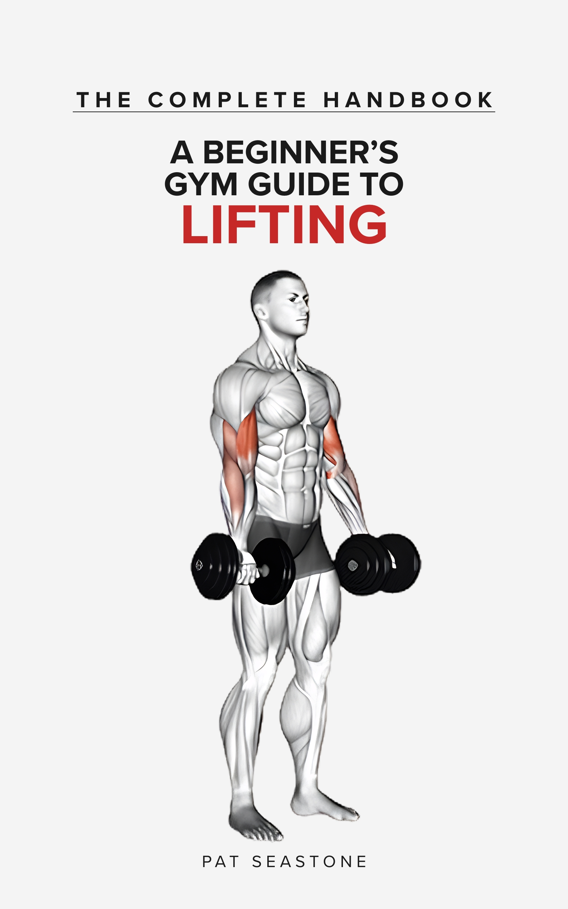

| Title | The Complete Handbook: A Beginner’s Gym Guide to Lifting |
|---|---|
| Subtitle | No Rigid Plans. No Bro‑Science. Build Muscle, Strength, and Confidence on Your Own Terms. |
| Author | Pat Seastone |
| Publication Date | 23 June 2026 |
| Word Count | ~42,000 words |
| Format | eBook (reflowable EPUB, DRM‑free) |
| Language | English (UK) |
| Publisher | Pat Seastone (self‑published) |
| Price | £8.99 |
| Available At | Amazon · Apple Books |
Note on page count: Because this is a reflowable ebook, page count varies by device and platform. Apple Books lists 169 pages; Amazon lists 200+. The word count (~42,000) is the most accurate measure of the book’s length.
You’ve decided to start going to the gym. Or to start again. Either way, the hardest part isn’t the weights — it’s the not‑knowing.
The Complete Handbook is the gym guide that treats you like an adult. No mandatory exercises. No bro‑science. No rigid twelve‑week programme that assumes your body works exactly like everyone else’s. Instead, it gives you the principles that underpin every effective training programme — and the freedom to build something that actually fits your life.
Inside you’ll find a Quick Start Card for walking in tomorrow, over 70 illustrated exercises with “if not this, then that” alternatives, a session builder that puts you in control, and a gentle roadmap for your first six months. Whether you’re walking through the door for the first time, or returning after years away and wanting to lift on your own terms — this is where you start.
Pat Seastone is a fitness writer dedicated to making the weight room accessible. Disillusioned by bro‑science, aggressive fitness culture, and rigid 12‑week programmes, Pat writes warm, permission‑first books that trust beginners to make their own choices. The Complete Handbook is Pat’s definitive guide to lifting on your own terms.
The author publishes under a pseudonym and uses this imprint mark for all public‑facing materials.

The book features over 70 detailed, full‑body anatomical illustrations showing start and end positions for every exercise. Here are three representative examples.
Sample images will be added here once upscaled for print quality. In the meantime, the cover image above gives a sense of the book’s visual style.
Most gym guides assume the reader already knows the basics, or they hand them a rigid, grueling 12‑week programme that falls apart the first time life gets in the way. The Complete Handbook was written to be the exact opposite. It acts as an antidote to gym intimidation and aggressive “no excuses” fitness culture. By stripping away the bro‑science and replacing it with a warm, permission‑first approach, the book doesn’t just tell beginners what to do — it teaches them the core principles of lifting so they can safely build strength, muscle, and confidence on their own terms.
FOR IMMEDIATE RELEASE — 23 June 2026
New Beginner’s Gym Guide Rejects Bro‑Science and Rigid Plans in Favour of Principles and Permission
The Complete Handbook: A Beginner’s Gym Guide to Lifting is a new kind of fitness book — one that trusts the reader to make their own choices. Published this week under the pen name Pat Seastone, the ~42,000‑word illustrated guide covers over 70 exercises with start‑and‑end images, a session builder that replaces fixed programmes, and “if not this, then that” alternatives for every movement.
“Most gym guides either shout at you or hand you a rigid plan that falls apart the first time life gets in the way,” the author says. “This book gives you the principles and lets you build something that fits your body and your schedule. No mandatory exercises. No bro‑science. Just the next right step.”
The book is available now on Amazon and Apple Books (£8.99, DRM‑free EPUB). A free companion PDF — Five Mistakes Beginners Make in the Gym (And How to Avoid Them) — is available for download at patseastone.com.
A zip file containing the cover, logo, sample images, and press release will be available here shortly. In the meantime, individual downloads are linked in each section above.
For review copies, interview requests, or any other inquiries, please email pat@patseastone.com.
{kind=link}
{kind=link}